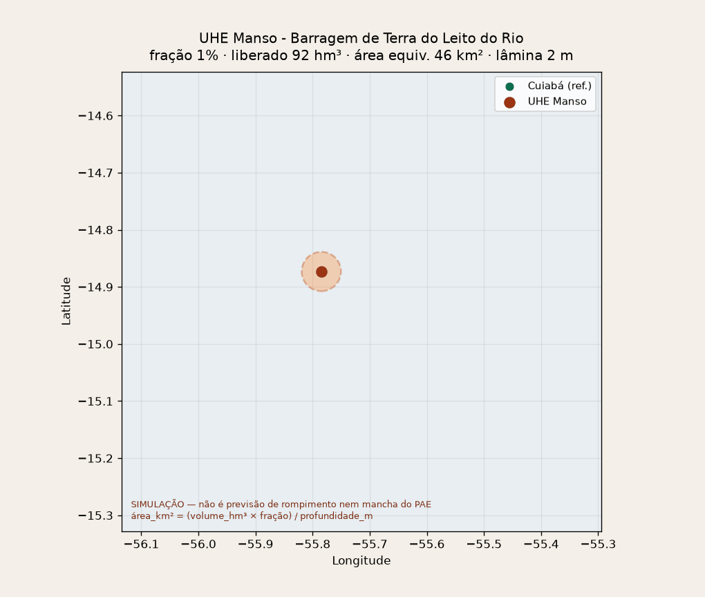

Este módulo não calcula probabilidade de falha e não substitui
o estudo de ruptura do empreendedor. A “área atingida” é uma lâmina equivalente
(volume ÷ profundidade), não a geometria real da onda. Use para treino, priorização e
diálogo com Defesa Civil / SES — nunca como ordem operacional de evacuação.
Camadas avançadas (Streamlit): relevo HAND (piloto Manso–Cuiabá),
setores IBGE 2022, captações Sisagua, escolas/ativos OSM, desvio de rota C7 e MapBiomas
estão no app
streamlit run streamlit_app.py (ou
rodar_local.ps1). Este HTML permanece o proxy circular rápido.
Bases tratadas: HAND 697 células · setores 2119 · Sisagua 281 · escolas 388 · MapBiomas mun. 11.
Parâmetros do cenário
Animação leve no mapa (sem GIF). Expande a mancha e revela US no buffer.
—
Volume cadastro (hm³)
—
Volume liberado (hm³)
—
Área equivalente (km²)
—
População estimada
—
Raio equivalente (km)
—
Municípios a jusante
—
Perfil sanitário
—
US no buffer (CNES)
área_km² = (capacidade_hm³ × fração) / profundidade_m
população: SIGBM (se houver) senão área × densidade municipal média
US: todas as unidades CNES com coordenada no raio equivalente
(não o município inteiro). Fundo = imagem satélite + mancha proxy.
Área atingida (proxy)
Hospital
UPA / pronto-socorro
UBS / ESF / posto
Demais US CNES
Barragem
Vídeo / GIF gerado (Manso)
